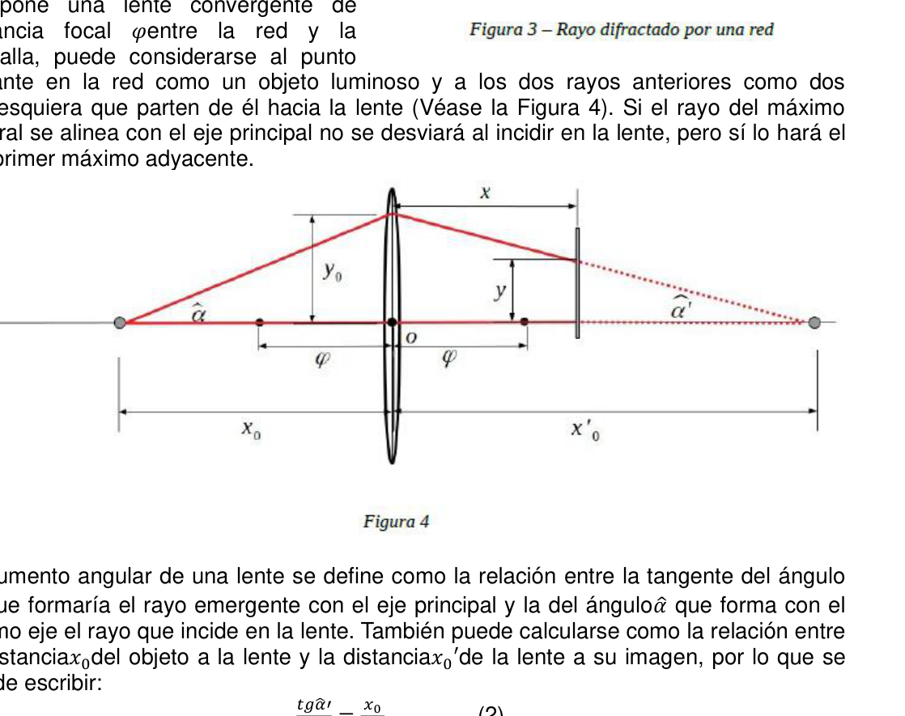

Distancia focal de una lente y densidad de lineas de un CD
PE56. Colegio N° 3 Mariano Moreno Ciudad Autónoma de Buenos Aires.
Introducción general en página 109.
Con la regulación térmica del salón de clases, Galileo tuvo casi todo controlado, pero era un perfeccionista: la orientación del Propellant Patronus era fundamental. Variaciones de décimas de grado podían provocar cambios en el destino de la goma patrón inaceptables para un metrólogo. Fue entonces que decidió alinear el dispositivo con una mira telescópica. Para ello contaba con algunas lentes1 cuya distancia focal deconocía, un puntero láser (de esos rojos) y un CD de Pimpinela.
Objetivo Aportar a la construcción de la mira de Galileo midiendo la distancia focal de una de sus lentes. Y ya que estamos, medir la densidad de líneas que hacen que un CD funcione como red de difracción.
Materiales y dispositivo experimental
- Puntero láser.
- Lupa de distancia focal desconocida.
- Red de difracción (O trozo de CD de Pimpinela).
- Portadiapositivas.
- Pantalla blanca.
- #3 trípodes o bases.
- #3 vástagos.
- #3 nueces dobles.
- Hojas milimetradas.
- Lápiz.
- Regla milimetrada.
Marco teórico Si se hace pasar un haz de luz a través de una ranura lo suficientemente pequeña, se difracta. Si la luz es monocromática y coherente (como la luz láser), y se la recoge en una pantalla colocada a una distancia conveniente, en lugar de observarse la imagen de la fuente, se observa una distribución regular que alterna zonas iluminadas y oscuras (máximos y mínimos) llamada patrón de difracción. La forma del patrón depende del espesor de la ranura, de la distancia desde ésta a la pantalla, y de la longitud de onda del la luz del haz incidente. Si en lugar de una única ranura, se trata de una red periódica de ellas (como la superficie finamente rayada de un CD o un DVD), llamada red de difracción, también se observa un patrón similar. En este caso, la separación entre el máximo central y su adyacente (𝑦0) depende de la cantidad de líneas por unidad de longitud o densidad de lineas de la red (𝛿), de la longitud de onda de la luz (𝜆) y de la distancia (𝑥0) de la red a la pantalla según:
𝑦0 𝑥0 = 𝛿𝜆𝑥0𝑦0 (1)
204 - OAF 2019 Como se ve en la figura 3, se puede considerar que la red divide al haz de la fuente en distintos rayos de los cuales solo dos se han representado: los que generan el máximo central y uno de los primeros máximos adyacentes. Si se interpone una lente convergente de distancia focal 𝜑entre la red y la pantalla, puede considerarse al punto brillante en la red como un objeto luminoso y a los dos rayos anteriores como dos cualesquiera que parten de él hacia la lente (Véase la Figura 4). Si el rayo del máximo central se alinea con el eje principal no se desviará al incidir en la lente, pero sí lo hará el del primer máximo adyacente.
El aumento angular de una lente se define como la relación entre la tangente del ángulo 𝛼′̂ que formaría el rayo emergente con el eje principal y la del ángulo𝛼̂ que forma con el mismo eje el rayo que incide en la lente. También puede calcularse como la relación entre la distancia𝑥0del objeto a la lente y la distancia𝑥0′de la lente a su imagen, por lo que se puede escribir: 𝑡𝑔𝛼̂′ 𝑡𝑔𝛼̂ = 𝑥0 𝑥0′ (2) También se verifica que, para lentes delgadas, la inversa de la distancia focal𝜑es la suma de las inversas de las distancias del objeto y de la imagen a la lente, es decir: 1 𝜑= 1 𝑥0
- 1 𝑥0′ Combinándola con la (2) se obtiene 𝑡𝑔𝛼̂′ 𝑡𝑔𝛼̂ = 𝑥0 𝜑−1 (3) Pero de la geometría de la figura cuatro y de la ecuación (1) surge que 𝑡𝑔𝛼̂′ = 𝑦0−𝑦 𝑥 y 𝑡𝑔𝛼̂ = 𝑦0 𝑥0 = 𝜆𝛿 Con esto en la ecuación (3) y operando, se obtiene la función que relaciona la distancia 𝑦 entre el máximo central y el adyacente con la distancia𝑥de la lente a la pantalla.
𝑦= −𝜆𝛿( 𝑥0 𝜑−1)𝑥+ 𝜆𝛿𝑥0 (4)
Procedimiento
- Arme el dispositivo de acuerdo a las figuras 1 y 2.
- Alinee el puntero láser, la red de difracción y la lupa de manera tal que el haz correspondiente al máximo central coincida con el eje principal de la lente de la mejor manera posible.
OAF 2019- 205
- Coloque la pantalla de manera de que el máximo central sea recogido cerca de uno de los bordes y marque su posición.
- Ubique la red de difracción a una distancia𝑥0a la lente de manera tal que al mover la pantalla se observen variaciones notables de la distancia𝑦entre los máximos.
- Manteniendo la posición del máximo central, marque sobre la pantalla las distintas posiciones que toma el máximo adyacente para cada distancia𝑥de la pantalla a la lente.
- Mida las distancias𝑦correspondientes a las distancias𝑥y vuélquelas en una tabla de valores.
- Confeccione una gráfica de𝑦vs.𝑥.
- A partir de la gráfica y de la ecuación (4) del marco teórico, obtenga las medidas de la densidad de líneas𝛿de la red y de la distancia focal𝜑de la lente.
Requerimientos Debe presentar: a) Una descripción de las fuentes de error y la fundamentación de los valores tomados para las indeterminaciones. b) La tabla de valores y todas las mediciones directas. c) La gráfica experimental completa. d) Cálculo de 𝛿. e) Cálculo de 𝜑.
Notas 1En esos días, la óptica del pueblo sufrió un asalto a manos de un encapuchado que, si bien no se llevó dinero, saqueó el depósito de lentes. Según consta en la denuncia, el encapuchado escapó con una bolsa llena de lentes al grito de “yo no soy Galileo Galimberti”….

Topic: Geometric Optics, Wave Optics Metodi: Interference & Diffraction Analysis, Experimental Data Analysis, Graph Linearization Competenze: Physical Reasoning, Experimental Data Analysis, Mathematical Modeling Objects: Lens, Diffraction Grating, Screen Fonte: Testo (PDF) — p.116
Distanza focale di una lente e densità di linee di un CD
PE56. Scuola N° 3 Mariano Moreno Città autonoma di Buenos Aires.
Introduzione generale a pagina 109.
Con la regolazione termico della sala di classe, Galileo aveva quasi tutto sotto controllo, ma era Perfetto: l’orientamento del Propellant Patronus era fondamentale. Variazioni di decima grado potrebbero causare cambiamenti in destino del gomma inaccettabile per un metrologista. Fu allora che decise di allineare il dispositivo con un bersaglio.
- Televisorio. Per questo ha utilizzato alcuni obiettivi1 la cui distanza focale non era nota, un Un puntatore laser (di quei rossi) e un CD di Pimpinela.
Obiettivo Contribuire alla costruzione del mirino di Galileo misurando la distanza focale di uno dei suoi
- Le lenti. E visto che siamo, misurare la densità di linee che fanno funzionare un CD come rete di diffusione.
Materiali e dispositivo sperimentale
- Punteggiatore laser.
- Luce a distanza focale sconosciuta.
- Rete di diffusione (O pezzo di CD di
- La pipìnea .
- Portate positive. -Screen bianco.
- Tre tripi o basi.
- Tre trincee.
- Tre noci doppie.
- Foglie millimetriche.
- Una penna.
- Regola di millimetro.
Marco teorico Se si fa passare un raggio di luce attraverso un slot abbastanza piccolo, si diffracta. Se la luce è monocromatica e coerente (come la luce laser), e si La raccoglie su uno schermo a distanza. La Commissione ha adottato una proposta di direttiva che prevede che il sistema di controllo dei dati sia La fonte è una distribuzione regolare che Alternazione di zone illuminate e scure (massimo e Minime) chiamato modello di diffrazione. La forma del Il modello dipende dal grosso del slot, dal Distanza da questa alla schermata, e da l’onda di luce del fascio incidente. Se invece di un singolo slot, si tratta di una rete La superficie è molto più elevata. (disegno di una CD o un DVD), chiamato rete di La diffrazione è un’altra caratteristica. En In questo caso, la separazione tra il massimo centrale e il suo adiacente (y0) dipende dal numero di linee per unità di lunghezza o densità di linee della rete (δ), della lunghezza d’onda della luce (λ) e della distanza (x0) dal network allo schermo secondo:
𝑦0 X0 = δλx0y0 (1)
204 - OAF 2019 Come si vede nella figura 3, si può Considerare che la rete divide il fascio di fonte in diversi raggi di cui Solo due sono state rappresentate: Generano il massimo centrale e uno dei i primi massimi adiacenti. Si se interponde un lente convergente di Distanza focale φtra la rete e la rete La scrittura è un’idea che si può considerare come il punto. brillante nella rete come un oggetto luminoso e i due raggi precedenti come due (Vedi Figura 4). Se il raggio del massimo Il centro si allinea con l’asse principale non si allontana incidendo sul lente, ma si allinea con il di primo massimo adiacente.
L’aumento angolare di una lente è definito come il rapporto tra la tangenza dell’angolo α′̂ che formerebbe il raggio emergente con l’asse principale e quella dell’angoloα̂ che forma con l’asse lo stesso asse del raggio che colpisce la lente. Si può anche calcolare come il rapporto tra La distanzax0 dell’oggetto dal lente e la distanzax0′ dal lente alla sua immagine, quindi si può scrivere: Tag: “Sistema di gestione” Tagα̂ = 𝑥0 𝑥0′ (2) Si verifica inoltre che, per lenti sottili, l’inversione della distanza focale è la somma di inversi delle distanze dell’oggetto e dell’immagine verso il lente, cioè: 1 𝜑= 1 𝑥0
- 1 𝑥0′ Combinandola con la (2) si ottiene Tag: “Sistema di gestione” Tagα̂ = 𝑥0 𝜑−1 (3) Ma dalla geometria della figura quattro e dell’equazione (1) emerge che Tag: > > > > > > > > > > > > > > > > > > > > > > > > > > > > > > > > > > > > > > > > > > > > > > > > > > > > > > > > > > > > > > > > > > > > > > > > > > > > > > > > > > > > > > > > > > > > > > > > > > > > > > > > > > > > > > > > > > > > > > > > > > > > > > > > > > > > > > > > > > > > > > > > > > > > > > > > > > > > > > > > > > > > > > > > > > > > > > > > > > > > > > > > > > > > > > > > > > > > > > > > > > > > > > > > > > > > > > > > > > > > > > > > > > > > > > > > > > > > > > > > > > > > > > > > > > > > > > > > > > > > > > > > > > > > > > > > > > > > > > > > > > > > > > > > > > > > > > > > > > > > > > > > > > > > > > > > > > > > > > > > > > > > > > > > > > > > > > > > > > > > > > > > > > > > > > > > > > > > > > > > > > > > > > > > > > > > > > > > > > > > > > > > > > > > > > > > > > > > > > > > > > > > > > > > > > > > > > > > > > > > > > > > > > > > > > > > > > > > > > > > > > > > > > > > > > > > > > > > > > > > > > > > > > > > > > > > > > > > > > > > > > > > > > > > > > > > > > > > > > > > > > > > > > > > > 𝑦0−𝑦 x e tgα̂ = 𝑦0 𝑥0 = 𝜆𝛿 Con questo nell’equazione (3) e operando, si ottiene la funzione che relaziona la distanza e tra il massimo centrale e l’adiacente con la distanza da l’obiettivo allo schermo.
𝑦= −𝜆𝛿( 𝑥0 F-1)x+ λδx0 (4)
Procedura
- Armati il dispositivo secondo le figure 1 e 2.
- Alinea il puntatore laser, la rete di diffrazione e il lucido in modo tale che lo faccia corrispondente al massimo centrale corrispondente all’asse principale della lente della il miglior modo possibile.
OAF 2019- 205
- Metti il display in modo che la massima centrale sia raccolta vicino a un’orbita e segna la sua posizione.
- posizionare la rete di diffrazione a una distanza da un’obiettivo in modo tale che il Movere lo schermo è un’ottima variazione della distanza tra i due
- Il massimo.
- mantenendo la posizione della maxima centrale, segna sullo schermo le Le posizioni di un’azzontazione sono diverse, con il massimo di distanza di un’azzontazione. schermo alla lente.
- Misurare le distanze corrispondenti alle distanzexy le svoltate in una tabella di valori.
- Configuri un grafico deivs.x.
- Sulla base del grafico e dell’equazione (4) del quadro teorico, ottenere le misure La densità di linee della rete e la distanza focale della lente.
Richieste Deve presentare: a) Una descrizione delle fonti di errore e la motivazione dei valori Le persone che hanno preso il controllo di questo sistema sono state prese per indeterminare. b) Il tabella dei valori e tutte le misure dirette. c) Il grafico sperimentale completo. d) Calcolo di δ. e) Calcolo di φ.
Notte 1In quei giorni, l’optica del popolo è stata attaccata da un cappuccio. che, sebbene non avesse portato via soldi, ha saccheggiato il deposito di lenti. Come riportato nella denuncia, il cappuccio è scappato con una borsa piena di lenti a grido di “no” Sono Galileo Galimberti.
Topic: Geometric Optics, Wave Optics Metodi: Interference & Diffraction Analysis, Experimental Data Analysis, Graph Linearization Competenze: Physical Reasoning, Experimental Data Analysis, Mathematical Modeling Objects: Lens, Diffraction Grating, Screen Fonte: Testo (PDF) — p.116
Focal distance of a lens and line density of a CD
PE56. School N° 3 Mariano Moreno The Autonomous City of Buenos Aires.
General introduction to page 109.
With the thermal regulation of the classroom, Galileo had almost everything under control, but it was The orientation of the Propellant Patronus was fundamental. Variations of tenth grade could cause unacceptable changes in the rubber patterns fate for a metrologist. That ‘s when he decided to align the device with a sight . telescopic. For this purpose, he had some lenses1 whose focal length he could not tell, a A laser pointer and a Pimpinela CD.
The objective Contribute to the construction of the Galileo sight by measuring the focal length of one of its
- What? And since we are, measuring the line density that makes a CD work. as a diffraction network.
Materials and experimental device
- Laser pointer. - What?
- Unknown focal length.
- diffraction network (or CD piece of
- What ?
- Positive portals.
- White screen.
- #3 tripod or base.
- #3 stems.
- Three double nuts.
- Millimeter sheets.
- A pencil.
- Millimeter rule.
Theoretical framework If you pass a beam of light through a slot small enough, it diffracts. If the light is The resulting light is monochrome and coherent (such as laser light), and is It picks up on a remote display . The Commission has already adopted a number of proposals for a new directive. The distribution of the product is a regular distribution. alternate light and dark areas (maximum and The minimum is called the diffraction pattern. The shape of the The pattern depends on the thickness of the slot, the distance from this to the screen, and length of The incident beam light wave. If instead of a single slot, it’s a network periodicity of them (such as the surface finely a strip of a CD or DVD), called a network of diffraction, a similar pattern is also observed. En In this case, the separation between the central maximum and its adjacent (y0) depends on the number of lines per unit of length or line density of the network (δ), of the wavelength of the light (λ) and the distance (x0) from the network to the screen according to:
𝑦0 The following shall be added to the list of the following:
The Commission shall adopt implementing acts in accordance with Article 21 of Regulation (EU) No 182/2011.’ As you can see in Figure 3, you can Consider that the network divides the beam of the source in different rays of which Only two have been represented: those who They generate the central maximum and one of the the first adjacent maximum. Si se It sets a convergent lens of The focal length φbetween the network and the screen, can be considered to the point bright in the net as a bright object and the two previous rays as two The resulting image is a visual image of the lens. If the maximum beam The central axis aligns with the main axis. It will not deviate when it hits the lens, but it will do so. of the first adjacent maximum.
The angular magnification of a lens is defined as the ratio of the tangent angle α′̂ which would form the emerging beam with the main axis and that of the angleα̂ which would form with the The same axis of lightning that hits the lens. It can also be calculated as the ratio of The distance x0 of the object to the lens and the distance x0′ from the lens to its image, so that You can write: The following table shows the following: The following is the list of the following: 𝑥0 𝑥0′ (2) It is also found that for thin lenses the inverse of the focal length is the sum of the of the reversals of the distance of the object and the image to the lens, i.e.: 1 𝜑= 1 𝑥0
- 1 𝑥0′ Combining it with the (2) is obtained The following table shows the following: The following is the list of the following: 𝑥0 𝜑−1 (3) But from the geometry of figure four and equation one, it turns out that The following table shows the following: 𝑦0−𝑦 x and tgα̂ = 𝑦0 𝑥0 = 𝜆𝛿 With this in equation (3) and operating, you get the function that relates the distance and between the centre and the adjacent maximum with the distance from the lens to the screen.
𝑦= −𝜆𝛿( 𝑥0 The following shall be added:
The procedure
- Arm the device according to Figures 1 and 2.
- Aline the laser pointer, the diffraction net and the magnifier so that you do it. corresponding to the central maximum corresponding to the main axis of the lens of the lens The best way possible.
The following information is provided for in the Annex to this Regulation:
- Place the screen so that the center maximum is collected near One of the edges and mark your position.
- Place the diffraction net at a distance from the lens so that the Moving the screen shows noticeable variations in the distance between the two maximum.
- Keeping the central maximum position, mark the screen The position of the axis of the axis of rotation is the same as the position of the axis of rotation. screen to lens.
- Measure the distances corresponding to the distancesxy you put them in a table The Commission has already adopted a number of proposals.
- Make a chart of deyvs.x.
- From the graph and equation (4) of the theoretical framework, obtain the measures The network’s line density and focal length of the lens.
Requirements You must present: (a) A description of the sources of error and the basis for the values The Commission has already taken a number of measures to address the problem. (b) The table of values and all direct measurements. (c) The complete experimental graph. (d) Calculation of δ. (e) Calculation of φ.
Notes 1In those days, the optics of the people were attacked by a hooded man. who, while he didn’t take any money, looted the lens depot. As stated in the The hooded man escaped with a bag full of glasses screaming “no”. I’m Galileo Galimberti and I’m going to be here.
Topic: Geometric Optics, Wave Optics Metodi: Interference & Diffraction Analysis, Experimental Data Analysis, Graph Linearization Competenze: Physical Reasoning, Experimental Data Analysis, Mathematical Modeling Objects: Lens, Diffraction Grating, Screen Fonte: Testo (PDF) — p.116